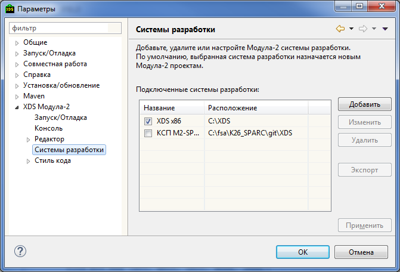

Интегрированная среда разработки Модула-2 программ (XDS Modula-2 IDE) предназначена для создания и редактирования исходных текстов программ на языке Модула-2, а также интеграции средств разработки Модула-2 программ в единый комплекс.
Интегрированная среда представляет собой набор подключаемых модулей платформы Eclipse. В состав интегрированной среды не входят средства разработки Модула-2 программ: компилятор, отладчик и т.п. Вместо этого предусмотрена возможность интеграции с уже установленными кросс-системами программирования (КСП).
В интегрированной среде используется своя проектная система, основными элементами, которой являются: Рабочие Области (Workspace), Проекты (Projects) и Ресурсы (Resources) интегрированной среды.
Каждая рабочая область может содержать один или несколько проектов интегрированной среды. Рабочие области позволяют разбить проекты на группы и использовать разные настройки для каждой из них.
Можно создать произвольное количество рабочих областей. Однако, каждый запущенный экземпляр интегрированной среды работает только с одной рабочей областью, которая становится на этот момент недоступной для остальных экземпляров интегрированной среды. Переключение между рабочими областями приводит к перезапуску интегрированной среды.
Интегрированная среда распространяется в виде ZIP-архива. Для ее установки распакуйте архив в локальную директорию компьютера, содержащую на менее 300 Мб свободного пространства.
Больше никаких действий не требуется. В архив уже включены все необходимые для функционирования интегрированной среды компоненты.
Для запуска интегрированной среды необходимо запустить файл xds-ide.exe из директории, в которую была установлена интегрированная среда разработки. После запуска интегрированной среды будет автоматически открыта проекция XDS Модула-2, настроенная на работу с Модула-2 проектами.
При первом запуске рабочая область (Workspace) автоматически создается в персональной папке пользователя %USERPROFILE%\xds-workspace.
При последующих запусках, по умолчанию, будет открываться последняя открытая проекция и рабочая область.
Интегрированная среда разработки позволяет подключать и использовать несколько систем программирования. Система программирования должна быть уже установлена на локальный или сетевой диск.
Для подключения системы программирования к интегрированной среде необходимо открыть диалог Параметры, выбрав в главном меню Окно > Параметры.... Затем в левой панели диалога выбрать XDS Mодула-2 > Системы разработки. После этого в правой части диалога необходимо нажать кнопку Добавить и выбрать каталог, в который установлена подключаемая КСП.

Если выбранная КСП подготовлена для интеграции со средой разработки (в корневом каталоге КСП находится файл sdk.ini), то в списке установленных систем программирования появится новая запись, соответствующая выбранной КСП.
Еcли же файл sdk.ini отсутствует, то откроется мастер для ручной настройки на данную КСП. Мастер настройки КСП можно открыть в любой момент, выбрав в списке желаемую систему программирования и нажав кнопку Изменить.
После закрытия диалога Параметры кнопкой OK интегрированная среда полностью готова к разработке Модула-2 программ.
Интегрированная среда позволяет подключить и одновременно использовать несколько кросс-систем программирования. Каждой из подключенных КСП присваивается уникальное имя. Если при подключении КСП обнаруживается совпадение имени с уже существующей, то к имени только что подключенной системы программирования добавится цифровой индекс.
Система программирования, отмеченная галочкой, является системой программирования, используемой по умолчанию. Она используется в том случае, если в проекте не была явно указана конкретная система программирования.